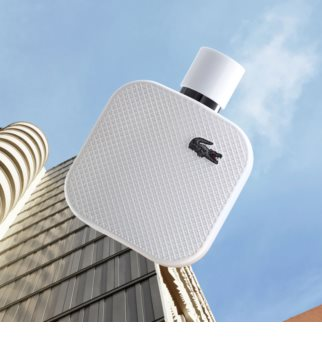

| Note de varf | EUCALIPT, LIMETTE |
| Note de inima | LEMN DE CEDRU |
| Note de baza | BRAD |
| Grupe de parfumuri | LEMNOASE |
Dacă aveți spirit sportiv, atunci parfumul Lacoste LAC L.12.12. vi se potrivește perfect. Este interpretarea parfumată a legendarului tricou polo, o creație semnată René Lacoste. Flaconul alb curat este ornat cu textura în relief a țesăturii pique, din care nu lipsește nici emblematicul crocodil.
